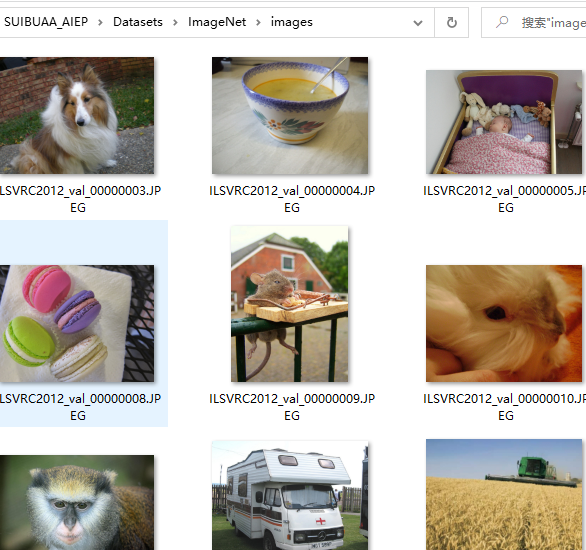

1. 数据集介绍¶
目前本项目已集成两种数据集，分别是Cifar10数据集，ImageNet数据集及ImageCustom数据集。
1.1. Cifar10数据集¶
目前项目提供的Cifar10数据集，采用的是npy格式存储，特点是共有10个类别，且保证均匀分布，每种类别数目一致。用户也可以自行生成，但是要求 label的格式是 one_vector类型如下：
ys_pred_adv [0 0 0 1 0 0 0 0 0 0]
ys_pred_adv [1 0 0 0 0 0 0 0 0 0]
ys_pred_adv [0 0 0 0 0 1 0 0 0 0]
...
ys_pred_adv [0 0 1 0 0 0 0 0 0 0]
Cifar10数据集下载链接¶
http://www.cs.toronto.edu/~kriz/cifar-10-python.tar.gz
Cifar100数据集下载链接¶
http://www.cs.toronto.edu/~kriz/cifar-100-python.tar.gz
npy格式生成¶
npy生成的方式可以参考代码 cifartonpy.py：
AISafety
├── EvalBox
├── Models
├── utils
├── test
│ ├── testimport.py
│ ├── testimport_black.py
│ ├── cifartonpy.py
├── Datasets
1.2. ImageNet数据集¶
数据以图片方式保存，对应给出一个图像样本名称和类别号的文件用于做输入
ImageNet数据集图像¶

ImageNet数据集标签文件¶
以~/AISafety/Datasets/ImageNet/val_10.txt文件为例：
ILSVRC2012_val_00000001.JPEG 65
ILSVRC2012_val_00000002.JPEG 970
ILSVRC2012_val_00000003.JPEG 230
...
ILSVRC2012_val_00000010.JPEG 109
ImageNet数据集类别字典¶
ImageNet数据集类别字典如下所示：
{
0: "tench Tinca tinca",
1: "goldfish. Carassius auratus",
...
27: "eft",
...
}
1.3. ImageCustom数据集¶
该数据集用于商品攻击功能模块。数据集与ImageNet数据集格式类似。